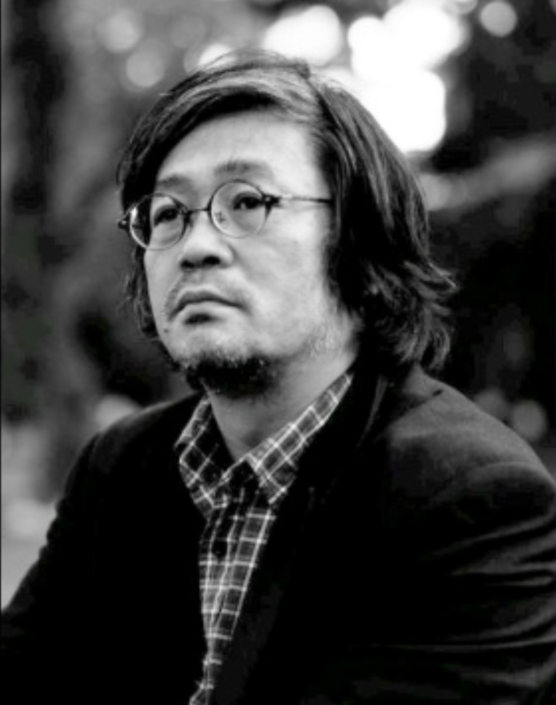

北角 権太郎 (Gontaro Kitazumi)
世界規格 `IrTran-P`, `IrSimple`, `IrWW`, `IrBurst` の国際標準規格仕様書の著者であり、米国IrDA会長を牽引したグローバル標準化の権威。新幹線ATCシステムの絶対安全設計知見、AED自律診断や遠隔医療など21件以上の特許を保有し、早稲田大学・慶應義塾大学SDM客員研究員を歴任。
米国赤外線データ協会 (IrDA) 技術委員会副議長を経て、2006年にIrDA会長(President)に就任。世界標準規格の国際的普及を主導。
数億台の機器に搭載された画像伝送規格 `IrTran-P`, 高速通信 `IrSimple`, 時計通信 `IrWW`, 大容量伝送 `IrBurst` 等の仕様書を単独・共同執筆。
1999年「IrTran-Pによるデジタルカメラ画像伝送規格の開発」、2005年「IrSimpleによる超高速赤外線通信技術の開発」により2度の技術賞を受賞。
自動体外式除細動器(AED)のバッテリー自律状態診断、遠隔診療システム、集束超音波医療ナビゲーション等の発明者として21件以上の特許を取得。
米国赤外線データ協会 (Infrared Data Association, USA) において、Protocol副議長、Technical Committee副議長を歴任後、2006年にIrDA会長 (President) に就任。
世界中の家電メーカー、携帯電話キャリア、半導体ベンダーとの調整を行い、`IrTran-P`（画像伝送）, `IrSimple`（高速通信）, `IrWW`（リストウォッチ規格）, `IrBurst` 等のグローバル標準化を完遂。
新幹線ATC（自動列車制御装置）システムの絶対安全・絶対停止ロジックの設計知見を基盤とし、救急医療現場での自動体外式除細動器(AED)における常時バッテリー状態診断技術や、遠隔診療システム、高精度医療ナビゲーションシステムを開発。
・早稲田大学 国際情報通信研究センター 客員研究員
・慶應義塾大学大学院 システムデザイン・マネジメント研究科 (SDM) 客員研究員
・国立成育医療センター 臨床研究員
先端通信、医療情報工学、システムデザイン論の分野で多数の共同研究・学術指導を実施。
「かつて赤外線通信で世界標準を作った時と同じように、現在の混乱したエッジIoTの世界に『誰もが直感的に扱えるシンプルで信頼性の高い世界標準』を打ち立てます。Gemini AIと日米欧アライアンスを掛け合わせることで、社会課題解決を世界中で加速させてまいります。」